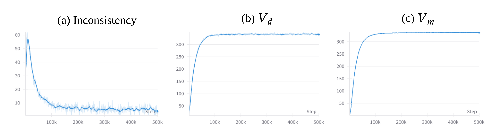
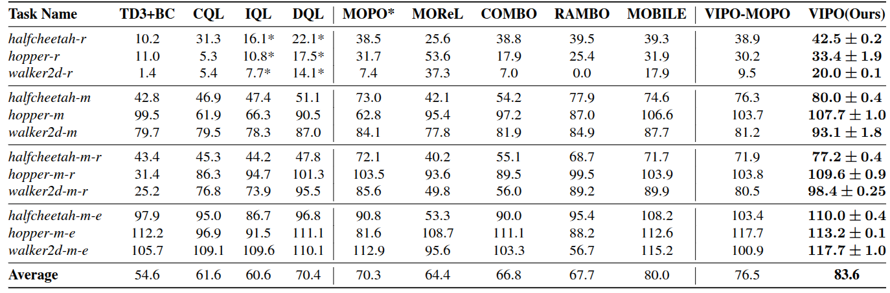
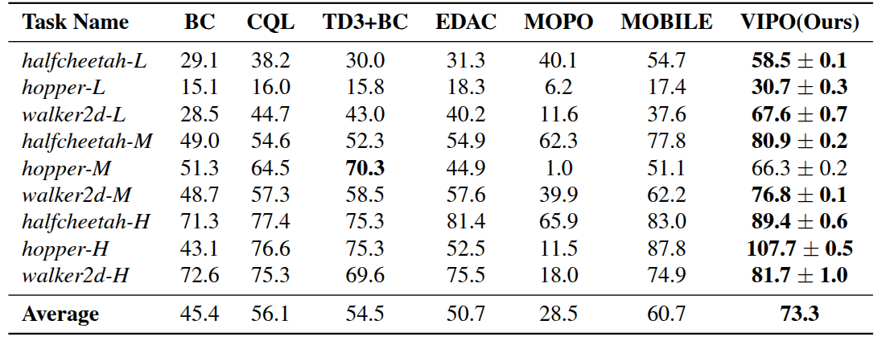
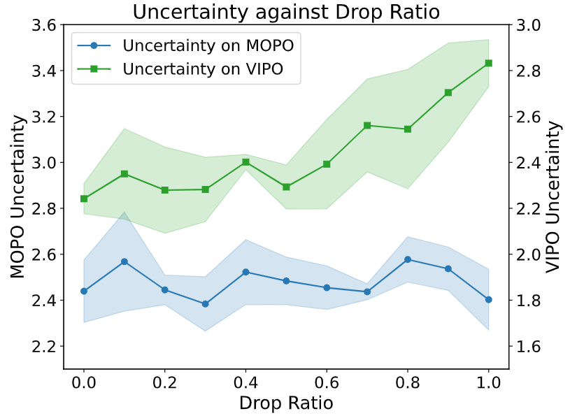

Introducing VIPO, a model-based offline RL algorithm that incorporates value function inconsistency into model training to enhance model accuracy and consequently achieve strong performance.
Offline reinforcement learning (RL) learns effective policies from pre-collected datasets, offering a practical solution for applications where online interactions are risky or costly. Model-based approaches are particularly advantageous for offline RL, owing to their data efficiency and generalizability, as they can utilize dynamics models to generate synthetic data that are not present in the dataset. However, due to inherent model errors, existing model-based methods often artificially introduce conservatism guided by heuristic uncertainty estimation, which can be unreliable. In this paper, we introduce VIPO, a novel model-based offline RL algorithm that incorporates self-supervised feedback from the value estimation to enhance model training. Specifically, the model is learned by additionally minimizing the inconsistency between the value learned directly from the offline data and the one estimated from the model. We perform comprehensive evaluations from multiple perspectives to show that VIPO can learn a highly accurate model efficiently and consistently outperform existing methods. In particular, VIPO achieves state-of-the-art performance on almost all tasks in both D4RL and NeoRL benchmarks.
We define the augmented model loss that combines the original model loss and the value function inconsistency loss. The original model loss measures the data fidelity of the learned model, while the value function inconsistency captures the discrepancy between the value function estimated from the offline dataset and that obtained through model-based evaluation.
We subsequently derive the analytical expression of its gradient, which forms the foundation for model training:
We can see that the mean values of the value functions from the model and the dataset are well aligned after several training steps:

(a) Evolution of Value Function Inconsistency During Model
Training.
(b) Evolution of Value Function learned from dataset.
(c) Evolution of Value Function learned from model-based
evaluation.



@misc{chen2026vipovaluefunctioninconsistency,
title={VIPO: Value Function Inconsistency Penalized Offline Reinforcement Learning},
author={Xuyang Chen and Keyu Yan and Guojian Wang and Lin Zhao},
year={2026},
eprint={2504.11944},
archivePrefix={arXiv},
primaryClass={cs.LG},
url={https://arxiv.org/abs/2504.11944},
}